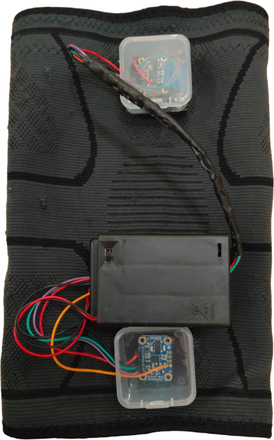

Overview
Developed a knee sleeve system using ESP32 and BNO055 IMUs to capture knee angle, stride, and gait metrics with wireless visualization.
Features
- IMU-based motion tracking and wireless logging.
- Grafana dashboards for live visualization.
- Biomechanical accuracy evaluation against gait lab data.
Project visuals
